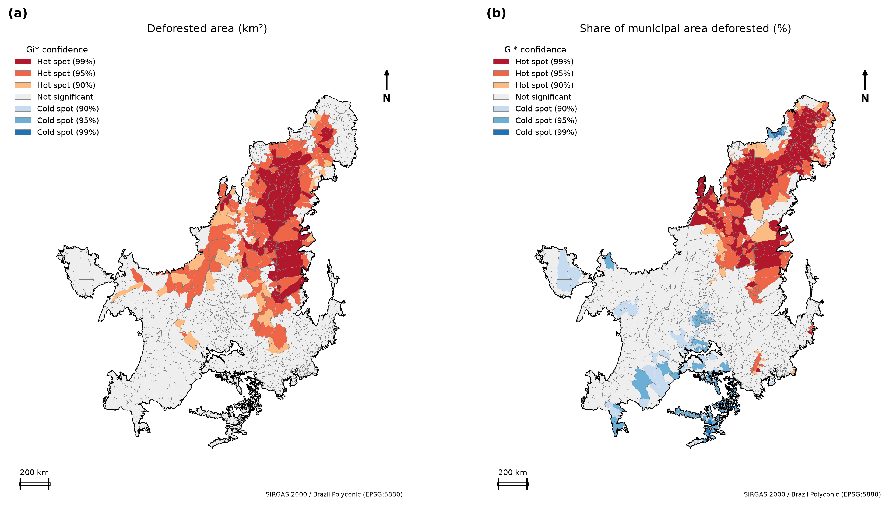
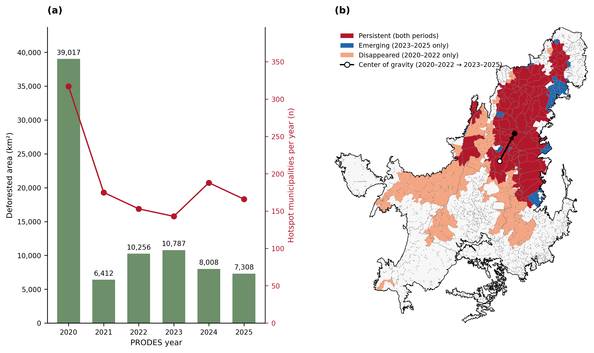
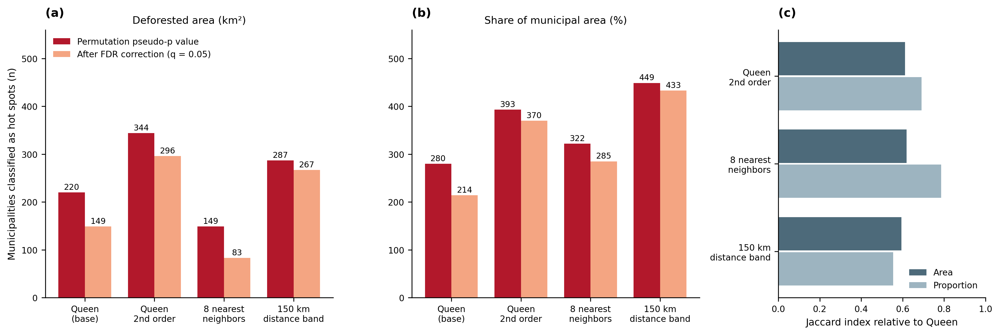
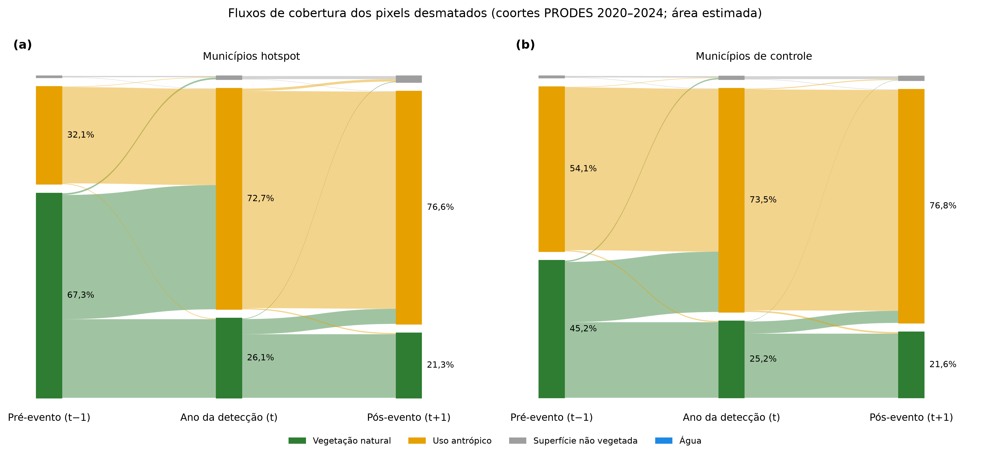
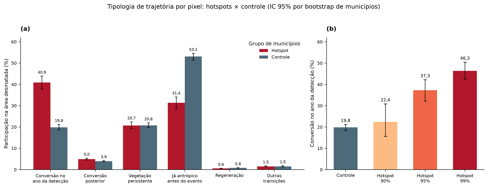
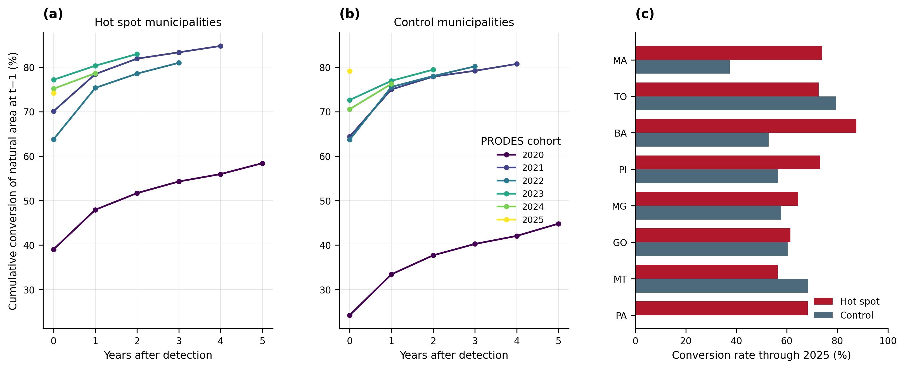
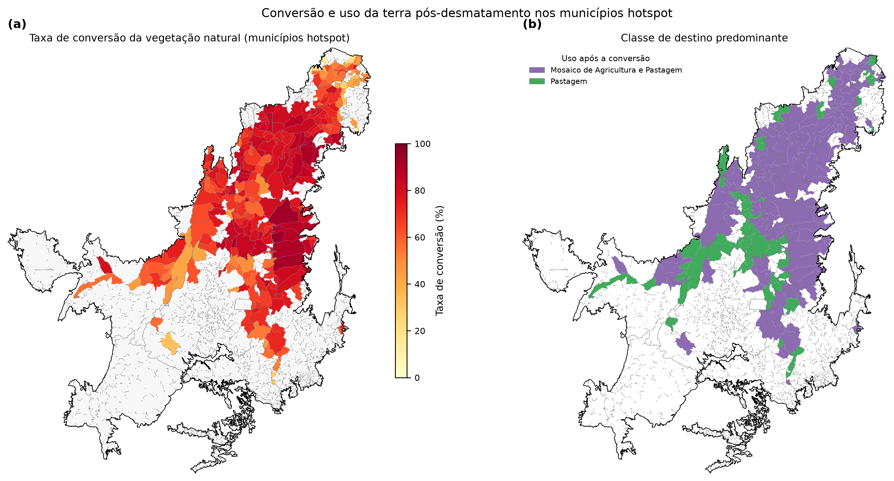

Resultados e discussão
1. Panorama do desmatamento detectado
Entre 2020 e 2025, o PRODES detectou 81.788 km² de desmatamento no Cerrado, distribuídos em 1.972.375 interseções polígono–município. A distribuição anual é fortemente assimétrica (Tabela 1): o ano de 2020 responde por 48% da área e por 84% das interseções, com fragmentos de mediana igual a 0,011 km². Esse comportamento é tratado como limitação e como ponto de verificação junto ao provedor dos dados.
Tabela 1. Área desmatada e número de interseções por ano de detecção.
| Ano | Área (km²) | Interseções |
|---|---|---|
| 2020 | 39.017 | 1.663.654 |
| 2021 | 6.412 | 55.067 |
| 2022 | 10.256 | 69.083 |
| 2023 | 10.787 | 65.622 |
| 2024 | 8.008 | 59.391 |
| 2025 | 7.308 | 59.558 |
2. Hotspots de desmatamento (Getis-Ord Gi*)
2.1 Distribuição espacial
Os dois indicadores apresentaram forte autocorrelação espacial positiva (I de Moran = 0,418 para a área e 0,644 para a proporção; 0,669 e 0,704 nas escalas logarítmicas; p = 0,001 em todos os casos), o que justifica a análise de agrupamentos locais.

Figura 1. Hotspots de desmatamento no Cerrado (Getis-Ord Gi*), 2020–2025: (a) área desmatada (km²); (b) proporção da área municipal desmatada (%).
Na análise da área desmatada, 220 municípios foram classificados como hot spot (41 a 90%, 117 a 95% e 62 a 99% de confiança). Na análise da proporção, foram 280 hot spots (41, 106 e 133, respectivamente) e 253 cold spots (131 a 90%, 113 a 95% e 9 a 99%). A união dos dois critérios resultou em 348 municípios hotspot, que somam 54.727 km², ou 66,9% de toda a área desmatada.
Os hotspots formam um corredor contínuo no Matopiba (sul do Maranhão, leste do Tocantins, sudoeste do Piauí e oeste da Bahia), com extensões no norte de Minas Gerais, em Goiás e no norte de Mato Grosso. Os cold spots da proporção concentram-se no sul do bioma, onde a conversão é anterior ao período analisado.
2.2 Municípios de maior pressão
Tabela 2. Municípios com maior área desmatada e maiores valores de Z (área).
| Posição | Maior área desmatada (km²) | Maior escore Z |
|---|---|---|
| 1 | Balsas (MA), 1.743 (13,7% do município) | Tasso Fragoso (MA), 11,70 |
| 2 | São Desidério (BA), 1.443 | Campos Lindos (TO), 11,37 |
| 3 | Jaborandi (BA), 1.018 | Sambaíba (MA), 10,94 |
| 4 | Formosa do Rio Preto (BA), 997 | Lizarda (TO), 10,60 |
| 5 | Paranã (TO), 909 | Correntina (BA), 10,56 |
Entre os demais, destacam-se Baixa Grande do Ribeiro (PI), com 695 km², Alto Parnaíba (MA), com 692 km², Rio Sono (TO), com 680 km², Grajaú (MA), com 660 km², e Santa Maria das Barreiras (PA), com 655 km², o que corresponde a 23,1% do território municipal.
Tabela 3. Municípios hotspot por unidade da federação (UF).
| UF | Municípios | Área desmatada (km²) |
|---|---|---|
| MA | 87 | 17.304 |
| TO | 90 | 14.170 |
| BA | 19 | 7.199 |
| PI | 66 | 6.018 |
| MG | 35 | 3.171 |
| GO | 29 | 3.082 |
| MT | 15 | 2.300 |
| PA | 7 | 1.483 |
Maranhão e Tocantins reúnem 177 dos 348 municípios hotspot (51%) e 57,5% da área desmatada nesses municípios. A Bahia, com apenas 19 municípios, contribui com 7.199 km², o que revela desmatamento de grande escala por município.
3. Dinâmica temporal e deslocamento

Figura 2. Dinâmica temporal da pressão de desmatamento: (a) área desmatada anual (barras) e número de municípios hotspot por ano (linha); (b) persistência dos hotspots entre 2020–2022 e 2023–2025, com o deslocamento do centro de gravidade da área desmatada (seta).
O número de hotspots na área desmatada foi de 263 em 2020–2022 e de 172 em 2023–2025. Dos 1.435 municípios, 139 foram persistentes, 33 emergentes, 124 extintos e 1.139 permaneceram sem hotspot. Na escala anual, os hotspots foram 317, 175, 153, 143, 188 e 166 de 2020 a 2025. Oito municípios mantiveram status de hotspot em todos os seis anos: Fernando Falcão, Formosa da Serra Negra e Timon (MA); São Desidério e Correntina (BA); Lavandeira e Aurora do Tocantins (TO); e Barreiras do Piauí (PI).
O centro de gravidade da área desmatada deslocou-se de (−12,43°; −47,82°) para (−10,32°; −46,72°), isto é, para nordeste, em direção ao sul do Maranhão e ao sul do Piauí.
4. Robustez da identificação de hotspots

Figura 3. Sensibilidade dos hotspots à definição de vizinhança e à correção para testes múltiplos: (a) área; (b) proporção; (c) índice de Jaccard em relação à configuração Queen.
Tabela 4. Hotspots por definição de vizinhança (pseudo valor-p e após correção FDR).
| Vizinhança | Área: hotspots | Área: FDR | Área: Jaccard | Proporção: hotspots | Proporção: FDR | Proporção: Jaccard |
|---|---|---|---|---|---|---|
| Queen (base) | 220 | 149 | – | 280 | 214 | – |
| Queen de 2ª ordem | 344 | 296 | 0,61 | 393 | 370 | 0,69 |
| 8 vizinhos mais próximos | 149 | 83 | 0,62 | 322 | 285 | 0,79 |
| Banda de 150 km | 287 | 267 | 0,59 | 449 | 433 | 0,55 |
A correção por FDR reduz a lista de hotspots em 4% a 44%. A concordância (Jaccard) varia de 0,55 a 0,79, o que indica que o núcleo do Matopiba é estável, enquanto a periferia depende da escala de vizinhança. Essa sensibilidade é inerente a estatísticas locais e justifica a classificação por níveis de confiança em vez de uma categoria binária.
5. Trajetória da cobertura da terra nos polígonos desmatados
5.1 Fluxos entre classes

Figura 4. Fluxos de grupos de cobertura entre o pré-evento (t − 1), a detecção (t) e o pós-evento (t + 1), nas coortes de 2020 a 2024.
Nos municípios hotspot, a vegetação natural ocupava 67,3% da área em t − 1, 26,1% em t e 21,3% em t + 1, ao passo que o uso antrópico passou de 32,1% para 72,7% e 76,6%. No controle, a vegetação natural passou de 45,2% para 25,2% e 21,6%, e o uso antrópico de 54,1% para 73,5% e 76,8%. Os dois grupos convergem na composição em t + 1, mas diferem quanto à origem: nos hotspots, a conversão parte de uma base predominantemente natural.
Considerando todos os municípios amostrados, a transição t − 1 → t foi de 35,4% (natural → antrópico), 24,6% (natural → natural), 38,2% (antrópico → antrópico), 0,7% (natural → superfície não vegetada) e 0,27% (antrópico → natural). A transição t → t + 1 foi de 71,9% (antrópico → antrópico), 21,0% (natural → natural) e 4,6% (natural → antrópico). Cerca de 25% da área ainda é classificada como natural pelo MapBiomas no ano da detecção, mesmo em hotspots, o que é compatível com defasagem entre as fontes ou com diferenças de classificação.
5.2 Tipologia hotspot × controle

Figura 5. Tipologia de trajetória por pixel: (a) hotspots × controle; (b) conversão no ano da detecção por nível de confiança do Gi*. As barras de erro representam IC de 95% por bootstrap de municípios.
Tabela 5. Participação de cada tipologia na área desmatada (%, coortes 2020–2024).
| Tipologia | Hotspot (IC 95%) | Controle | Diferença, p.p. (IC 95%) |
|---|---|---|---|
| Conversão no ano da detecção | 40,9 (37,8–43,9) | 19,8 | +21,05 (17,67 a 24,81) |
| Conversão posterior | 5,0 | 3,9 | +1,01 (0,57 a 1,44) |
| Vegetação persistente | 20,7 | 20,8 | sem diferença |
| Já antrópico antes do evento | 31,4 (28,5–34,1) | 53,1 | −21,71 (−24,70 a −18,32) |
| Regeneração | 0,58 | 0,84 | −0,26 |
| Outras transições | 1,5 | 1,5 | sem diferença |
A composição difere entre os grupos (V de Cramér = 0,240; IC 95%: 0,207–0,269; p de permutação = 0,0005), com 348 municípios hotspot (26.650 fragmentos) e 884 de controle (20.073 fragmentos). O tamanho efetivo de amostra de Kish é de aproximadamente 9.400 a 9.800 por grupo.
A diferença central é a proporção de conversões efetivas de vegetação natural. Nos hotspots, 45,9% da área (40,9% mais 5,0%) corresponde a conversão observada no ano da detecção ou no seguinte, ao passo que no controle esse valor é de 23,7%. A área “já antrópica” é 21,7 p.p. menor nos hotspots: o desmatamento detectado no controle incide em grande parte sobre áreas que o MapBiomas já classifica como antrópicas, o que indica sobreposição com áreas previamente alteradas.
Gradiente por nível de confiança. A conversão no ano da detecção aumenta com a confiança do Gi*: 19,8% no controle, 22,4% (n = 53) em hotspots de 90%, 37,3% (n = 135) em 95% e 46,3% (n = 160) em 99%. Por variável, o valor é de 42,9% (n = 220) na área e de 44,2% (n = 280) na proporção. O gradiente monotônico indica que a concentração espacial do desmatamento está associada a uma conversão mais direta e imediata.
5.3 Sensibilidade às referências temporais
Tabela 6. Tipologia nos municípios hotspot (%) segundo a referência pré e pós.
| Pré | Pós | Conversão no ano | Conversão posterior | Persistente | Já antrópico |
|---|---|---|---|---|---|
| t − 1 | t + 1 | 40,9 | 5,0 | 20,7 | 31,4 |
| t − 1 | t + 2 | 38,9 | 7,2 | 19,7 | 31,6 |
| 2019 | t + 1 | 48,5 | 4,9 | 20,7 | 23,8 |
| 2019 | t + 2 | 44,3 | 7,2 | 19,7 | 26,3 |
A escolha das referências altera as magnitudes, mas não as conclusões qualitativas: a conversão no ano da detecção é sempre a trajetória mais frequente nos hotspots (38,9% a 48,5%), e a vegetação persistente permanece em torno de 20%. Ao adotar 2019 como linha de base, a parcela “já antrópica” diminui porque os pixels antrópicos criados entre 2019 e t − 1 são reclassificados como conversão.
5.4 Persistência e velocidade da conversão

Figura 6. Conversão acumulada da área natural de t − 1 por coorte de detecção: (a) hotspots; (b) controle; (c) taxa de conversão por UF até 2025.
Tabela 7. Conversão acumulada (%) da área natural em t − 1, por defasagem em anos após a detecção.
| Grupo / coorte | 0 | 1 | 2 | 3 | 4 | 5 |
|---|---|---|---|---|---|---|
| Hotspot 2020 | 39,0 | 47,9 | 51,7 | 54,3 | 56,0 | 58,4 |
| Hotspot 2021 | 70,1 | 78,4 | 81,9 | 83,3 | 84,8 | – |
| Hotspot 2022 | 63,8 | 75,3 | 78,5 | 81,0 | – | – |
| Hotspot 2023 | 77,2 | 80,3 | 83,0 | – | – | – |
| Hotspot 2024 | 75,2 | 78,6 | – | – | – | – |
| Controle 2020 | 24,2 | 33,4 | 37,7 | 40,2 | 42,1 | 44,8 |
| Controle 2021 | 64,4 | 75,0 | 77,9 | 79,2 | 80,7 | – |
| Controle 2022 | 63,7 | 75,6 | 78,0 | 80,2 | – | – |
| Controle 2023 | 72,6 | 76,9 | 79,4 | – | – | – |
| Controle 2024 | 70,6 | 76,2 | – | – | – | – |
| Controle 2025 | 79,1 | – | – | – | – | – |
A conversão é rápida: nas coortes de 2021 a 2024, 63,8% a 77,2% da área natural já está convertida no ano da detecção, e 78,6% a 84,8% ao final do período. As curvas se estabilizam após o segundo ano, o que indica que a maior parte da conversão ocorre em até dois anos. A coorte de 2020 é a exceção, com valores mais baixos em ambos os grupos, o que é coerente com a natureza distinta desse ano. Nas coortes de 2021 em diante, hotspots e controle convergem (75% a 85%).
5.5 Destinos da conversão

Figura 7. Conversão e uso da terra pós-desmatamento nos municípios hotspot: (a) taxa de conversão da vegetação natural; (b) classe de destino predominante.
Nos municípios hotspot, a área natural em t − 1 era de 36.814 km², dos quais 27.255 km² (74,0%) foram convertidos. Das estimativas municipais, 255 dos 348 municípios foram consideradas confiáveis. Por área, o destino foi mosaico de agricultura e pastagem (76,2%), pastagem (21,3%), agricultura (2,4%) e outras classes (0,1%). O mosaico foi a classe predominante em 245 municípios, e a pastagem em 103.
Tabela 8. Maiores áreas convertidas e taxa de conversão (%).
| Município | Área convertida (km²) | Taxa (%) |
|---|---|---|
| Balsas (MA) | 1.186 | 79,2 |
| São Desidério (BA) | 1.044 | 90,1 |
| Formosa do Rio Preto (BA) | 719 | 92,8 |
| Jaborandi (BA) | 637 | 82,7 |
| Alto Parnaíba (MA) | 524 | – |
| Uruçuí (PI) | 501 | 90,4 |
| Barreiras (BA) | 499 | 88,7 |
| Baixa Grande do Ribeiro (PI) | 495 | – |
Tabela 9. Taxa de conversão e área convertida nos hotspots, por UF.
| UF | Taxa de conversão (%) | Área convertida (km²) |
|---|---|---|
| BA | 87,5 | 4.835 |
| MA | 73,9 | 9.892 |
| PI | 73,1 | 3.524 |
| TO | 72,5 | 6.110 |
| PA | 68,2 | – |
| MG | 64,5 | – |
| GO | 61,4 | – |
| MT | 56,4 | – |
A Bahia apresenta a maior taxa (87,5%), compatível com a consolidação da agricultura mecanizada no oeste baiano. O Maranhão concentra a maior área convertida (9.892 km²).
5.6 Validação
A fração da área PRODES classificada como vegetação natural pelo MapBiomas em t − 1 foi de 67,7% nos hotspots e de 46,4% no controle. A concordância mais baixa no controle é consistente com a maior proporção de áreas previamente antrópicas, e a medida reflete tanto a discordância entre as fontes quanto a alteração anterior da cobertura. O alinhamento geométrico entre PRODES e MapBiomas foi confirmado visualmente em 120 polígonos estratificados. A verificação manual por imagens de satélite permanece pendente.
6. Discussão
6.1 Onde se concentra a pressão de desmatamento
O Gi* mostra que a pressão não é distribuída de forma homogênea: 348 dos 1.435 municípios (24%) concentram 66,9% da área desmatada, e o agrupamento é contínuo, não pontual. O Matopiba aparece como o principal polo, em consonância com a literatura sobre a expansão da fronteira agrícola do Cerrado. O uso de duas variáveis é relevante: a área absoluta identifica o núcleo de grande escala na Bahia e no sul do Maranhão, ao passo que a proporção destaca municípios menores do Maranhão, do Tocantins e do Piauí onde a pressão relativa é alta. A correção por FDR e as variações de vizinhança indicam que o núcleo é robusto, mas que as bordas dependem da escala de análise.
6.2 O que ocorre após a detecção
Os resultados indicam que o desmatamento detectado em hotspots resulta, em geral, em conversão permanente. A regeneração é desprezível (0,58% da área), e a conversão posterior é pequena (5,0%). Três quartos da área natural em t − 1 são convertidos, majoritariamente para mosaico de agricultura e pastagem (76,2%) e pastagem (21,3%), e as curvas de conversão acumulada praticamente se estabilizam em dois anos. O destino das áreas converte-se, portanto, em usos agropecuários consolidados, e a baixa participação da agricultura explícita (2,4%) sugere que a transição ocorre por meio de estágios intermediários, em que a distinção entre pastagem e agricultura é difícil de resolver em um ano.
6.3 Diferenças entre hotspots e demais municípios
A principal distinção é a natureza do desmatamento. Nos hotspots, 40,9% da área é convertida no ano da detecção e 31,4% já é antrópica, ao passo que no controle esses valores são de 19,8% e 53,1%. Os hotspots, portanto, correspondem a frentes de conversão de vegetação ainda nativa, e o controle reflete sobretudo áreas já alteradas. O gradiente por nível de confiança (19,8% → 22,4% → 37,3% → 46,3%) reforça que o agrupamento estatístico se associa a conversão mais direta. Hotspots e controle não diferem na vegetação persistente (20,7% e 20,8%), de modo que a permanência da vegetação após a detecção não distingue os grupos.
6.4 Relação com os objetivos e implicações
Com relação aos objetivos do estudo: (1) a localização da pressão foi identificada de forma robusta e quantificada por município, UF e período; (2) o destino dos polígonos foi caracterizado com trajetórias anuais por pixel e (3) a comparação com o controle foi realizada com inferência que considera a estrutura em conglomerados. Do ponto de vista de política pública, os resultados sugerem que a janela de intervenção é curta, pois a conversão ocorre em até dois anos, e que o monitoramento e a fiscalização precisam ser direcionados ao Matopiba, onde a vegetação nativa é convertida de forma direta. O deslocamento do centro de gravidade para nordeste indica que a fronteira avança para o sul do Maranhão e do Piauí, e o número de municípios persistentes (139) e emergentes (33) pode orientar a priorização.
6.5 Limitações
- Domínio da coorte de 2020. A coorte concentra 48% da área e 84% das interseções, com fragmentos de mediana igual a 0,011 km², o que pode refletir regime de mapeamento distinto. Os resultados que dependem do total de interseções devem ser interpretados com cautela, e recomenda-se uma análise de sensibilidade sem essa coorte. As coortes de 2021 a 2024 apresentam resultados mais homogêneos entre grupos.
- Unidade e resolução. A unidade é a interseção polígono–município, e a resolução anual impede ordenar eventos dentro do mesmo ano. A coorte de 2025 não possui ano posterior.
- Defasagem entre fontes. Cerca de 25% da área ainda é natural no ano da detecção, o que mostra que a coincidência temporal entre PRODES e MapBiomas é imperfeita.
- Definição de hotspot. A união de duas variáveis é inclusiva, e a periferia dos hotspots depende da vizinhança (Figura 3).
- Inferência. Os intervalos refletem a variabilidade entre municípios e não incorporam integralmente a variância da amostragem de Poisson; o qui-quadrado de Kish é anticonservador. Os resultados descrevem associações e não causalidade.
- Validação. A revisão manual por imagens de satélite ainda não foi realizada.
6.6 Trabalhos futuros
Incluem a análise de sensibilidade excluindo 2020, a conclusão da revisão visual, a incorporação de variáveis explicativas (infraestrutura, aptidão agrícola, áreas protegidas e estrutura fundiária), a análise espaço-temporal por cubo espaço-tempo e a avaliação da conversão em relação à legalidade do desmatamento.
7. Conclusões
- O desmatamento do Cerrado entre 2020 e 2025 é espacialmente concentrado: 348 municípios hotspot respondem por 66,9% da área desmatada, com núcleo no Matopiba.
- O centro de gravidade do desmatamento deslocou-se para nordeste, e 139 municípios mantiveram status de hotspot nos dois períodos analisados.
- Nos hotspots, a conversão é rápida e praticamente irreversível: 74,0% da área natural foi convertida, quase integralmente para mosaico de agricultura e pastagem e pastagem, e a regeneração é inferior a 1%.
- Os hotspots diferem do controle na origem do desmatamento: há mais conversão direta de vegetação natural (40,9% contra 19,8%) e menos áreas previamente antrópicas (31,4% contra 53,1%), com gradiente crescente em função do nível de confiança.
- Os resultados são robustos às referências temporais e à correção por testes múltiplos, mas dependem da definição de vizinhança na periferia dos hotspots e do tratamento da coorte de 2020.